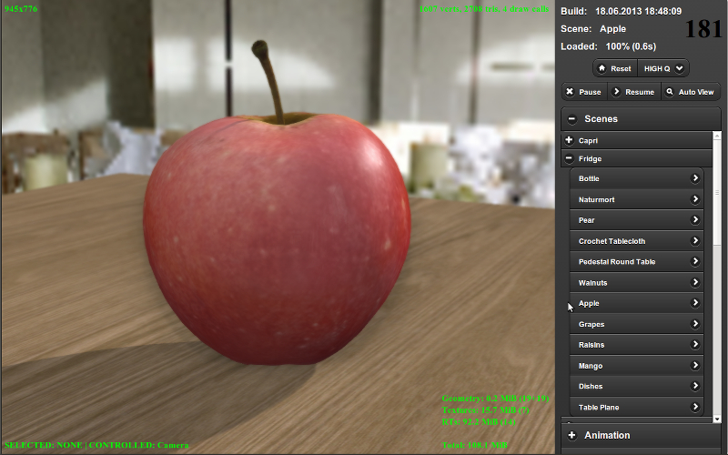

Рабочий процесс¶
Создание любого продукта является творческим процессом, в котором могут участвовать множество людей, с различными навыками и опытом. Однако вне зависимости от его сложности и конечного результата, всегда можно выделить стадию производства, на которой создаётся основной объём ресурсов (ассетов) и исходного кода.
При использовании Blend4Web, производственный процесс можно представить следующим образом:
- Подготовка трёхмерных сцен в программе Blender.
- Экспорт сцен.
- Запуск, настройка и отладка сцены в программе-просмотрщике.
- Создание целевого веб-приложения.
Подготовка сцен¶
Помимо обычных операций по моделированию, текстурированию, анимации и т.д. должна быть осуществлена подготовка сцены для работы в движке.
Общие рекомендации:
- Настоятельно рекомендуется сохранять blend-файлы в директории
blender/имя_проекта. Там же должны находиться вспомогательные файлы, не предназначенные для загрузки в приложение (например, референсы). - Изображения и медиа-файлы должны быть внешними и находиться в директории
deploy/assets/имя_проекта. - Файл, из которого будет осуществляться экспорт, должен содержать только необходимые в разрабатываемом приложении ресурсы (объекты, материалы, текстуры, анимацию и т.д.)
- Составные части сцен должны иметь отличающие названия. Они не должны называться “Cube.001”, “Material”, “Armature”.
- Рекомендуется практиковать добавление по ссылке (linking) компонентов из других файлов (библиотек).
Экспорт сцен¶
Для загрузки сцен, созданных с помощью пакета Blender, в движок, необходимо перевести их в формат, пригодный для чтения браузером. На данный момент используются текстовые файлы с расширением .json, в которые сохраняются экспортируемые структуры данных в формате JSON (JavaScript Object Notation). Данный файл, в свою очередь, ссылается на один бинарный файл с расширением .bin, содержащий массивы данных моделей, и на внешние ресурсы - текстуры и звуковые сэмплы.
Файлы .json и .bin создаются при экспорте, файлы текстур и медиа-файлы, как правило, должны быть размещены вручную. Внедренные в .blend-файл ресурсы автоматически размещаются рядом с экспортированными файлами.
Экспорт производится выбором в меню File > Export опции Blend4Web (.json). Быстрый доступ - поиск по b4w export (горячая клавиша ПРОБЕЛ).
Экспортные файлы рекомендуется размещать в директории, предназначенной для развертывания приложения, например deploy/assets/имя_проекта.
Необходимо использовать относительные пути для внешних ресурсов (как правило, это происходит по умолчанию). В случаях, когда это не так, необходимо выполнить команду File > External Data > Make All Paths Relative (т.е. сделать все пути относительными). Использование абсолютных путей вместо относительных может приводить к ошибкам при попытках загрузки .blend и .json файлов на других компьютерах.
В момент экспорта происходит проверка сцены на предмет использования не поддерживаемых движком возможностей Blender’a. В таких случаях генерируется сообщение об ошибке. Перечень возможных ошибок экспорта перечислен в соответствующем разделе.
Опции экспорта подробно описаны в соответствующем разделе.
Отображение сцен в просмотрщике¶
При использовании локального сервера разработки возможно сделать предварительный просмотр сцены используя кнопку Fast Preview, расположенную на панели Scene->Development Server в Blender. В этом случае будет произведён автоматический экспорт сцены во временное хранилище с последующей загрузкой в просмотрщике.
Другой способ это использовать опцию экспорта сцены Run in Viewer. В этом случая сцена показывается в просмотрщике сразу после экспорта.
При необходимости долгосрочного хранения сцены в списке сцен просмотрщика, нужно вручную добавить запись в текстовой файл apps_dev/viewer/assets.json, который доступен при открытии Blender’a при использовании Blend4Web SDK.
Для редактирования файла откройте “Text Editor”:

В появившемся окне вы сможете выбрать файл assets.json и отредактировать его:

Для добавления новой сцены нужно знать категорию, в которой она должна отображаться. Категория обычно соответствует названию проекта и имени директории, где хранятся соответствующие файлы.
Пример¶
Ниже приведена примерная часть файла assets.json, в которой находятся два проекта “Capri” и “Fridge” с соответствующими сценами в каждом проекте:
{
name: "Capri",
items: [
{
name: "Baken",
load_file : "capri/props/baken/baken.json"
},
{
name: "Terrain",
load_file : "capri/landscape/terrain/terrain.json"
}
]
},
{
name: "Fridge",
items: [
{
name: "Apple",
load_file : "fridge/fruits/apple/apple.json"
},
{
name: "Mango",
load_file : "fridge/fruits/mango/mango.json"
}
]
}
Добавление можно осуществить копированием и вставкой описания похожей сцены в нужной категории и последующим редактированием ее названия и пути к экспортному файлу.
В случае успешного добавления сцена должна появиться в списке сцен просмотрщика в нужной категории.
{kind=link}
Разработка приложения¶
На этой стадии создаётся приложение, в котором на языке JavaScript пишется логика по загрузке сцены и взаимодействию с ней пользователя. Документация для разработчиков приложений приведена в соответствующем разделе.